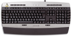
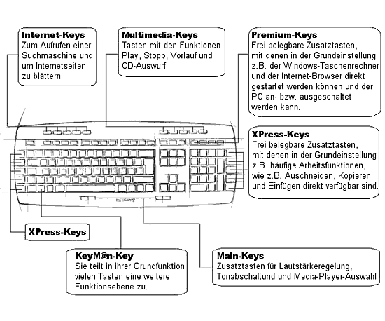

Cherry Master Linux
Archivierte Anleitung
Dieser Artikel wurde archiviert, da er - oder Teile daraus - nur noch unter einer älteren Ubuntu-Version nutzbar ist. Diese Anleitung wird vom Wiki-Team weder auf Richtigkeit überprüft noch anderweitig gepflegt. Zusätzlich wurde der Artikel für weitere Änderungen gesperrt.
Zum Verständnis dieses Artikels sind folgende Seiten hilfreich:

Die Multimedia-Tastatur Cherry CyMotion Master Linux  (G86-21070) ist nicht mehr ganz neu und wird von der Herstellerfirma inzwischen nicht mehr angeboten. Sie wird aber wohl noch eine Weile von ihren Fans verwendet werden. Im Folgenden soll über den aktuellen Stand der Hardware-Unterstützung informiert werden und darüber, welche Schritte noch zu einer vollständigen Einrichtung nötig sind.
(G86-21070) ist nicht mehr ganz neu und wird von der Herstellerfirma inzwischen nicht mehr angeboten. Sie wird aber wohl noch eine Weile von ihren Fans verwendet werden. Im Folgenden soll über den aktuellen Stand der Hardware-Unterstützung informiert werden und darüber, welche Schritte noch zu einer vollständigen Einrichtung nötig sind.
Hardware-Erkennung¶
Mit aktuellen Kerneln ist keine Handarbeit mehr nötig: Die Tastatur einfach am USB-Port einstecken und alle Tasten werden vom Kernel erkannt. Probleme entstehen derzeit nur noch von Zeit zu Zeit durch neue Versionen der Desktopumgebung. Diese werden jedoch über kurz oder lang durch die Fehlerbehebungen beseitigt. Aktuell werden von Gnome 2.26 alle Tasten erkannt und durch die Datei /usr/share/X11/xkb/symbols/inet mit Namen versehen.
|  |
| Quelle: Cherry |
Einrichtung der Sondertasten¶
Um die Tasten einzurichten, benötigt man keine speziellen Programme wie xbindkeys, LinEAK oder Keytouch mehr. Man kann diese aber natürlich zusätzlich einsetzen, z. B. wenn man spezielle Effekte, wie das Erscheinen eines Nachrichtenfensters beim Drücken einer Taste (siehe Benachrichtigungsdienst) haben möchte.
Die Internet-Tasten, Multimedia-Tasten, Premium-Tasten und die Main-Tasten sind bereits sinnvoll entsprechenden Aktionen zugeordnet. Bei Bedarf kann man diese Zuordnung unter "System -> Einstellungen -> Tastenkombinationen" nach eigenen Wünschen ändern.
Zusätzliche Sondertasten¶
Die Keym@n -Taste hat in erster Linie die Funktion, in Kombination mit den XPress-Tasten die Funktionstasten F1 bis F10 zu erzeugen. Und die An-Taste (Teil der Premium-Tasten) erhält so die Zweitbelegung XF86Sleep.
Die -Taste ist genau wie die Windows -Taste eine Kombinationstaste.
Die @ -Taste soll die Tastenkombination Alt Gr + Q ersetzen.
Und die -Taste lässt das Menü aufklappen.
Wenn man möchte, kann man die -, @ - und -Taste mit Xmodmap zu normal belegbaren Tasten machen, indem man sie etwa zu F13 , F14 und F15 macht. Dann kann man beispielsweise mit der -Taste GNOME Do starten.
Dazu erstellt man mit dem Editor [2] eine Datei, die man im Homeverzeichnis unter dem Namen .Xmodmap abspeichert, mit folgendem Inhalt:
keycode 133 = F13 keycode 134 = F14 keycode 135 = F15
Damit die neuen Tastenbelegungen wirksam werden, muss man sich am System neu anmelden. Es erscheint dann ein Fenster, wo das Laden der .Xmodmap bestätigt werden kann. Das passiert immer dann, wenn etwas an der Datei geändert wurde.
Die XPress-Tasten einrichten¶
Die Befehle für die Sondertasten rechts und links von der Tastatur sind Tastenkombinationen, wie z. B. Strg + C für Kopieren und Strg + V für Einfügen. Diese Tastenkombinationen müssen noch mit diesen Tasten verknüpft werden. Man legt sogenannte "Redicts" an.
Für die "Redicts" ist ein Skript in /usr/share/X11/xkb/compat mit dem Namen cymotion erforderlich. Die Datei /usr/share/X11/xkb/compat/cymotion wird in einem Editor mit Root-Rechten [2] angelegt.
In diese Datei Folgendes einfügen:
// $XFree86$
// XFree86 special keysyms
default partial xkb_compatibility "basic" {
interpret.repeat= True;
// Ctrl+C for Copy
interpret XF86Copy {
action = Redirect(Key=<AB03>, modifiers=Control);
};
// Ctrl+V for Paste
interpret XF86Paste {
action = Redirect(Key=<AB04>, modifiers=Control);
};
// Ctrl+X for Cut
interpret XF86Cut {
action = Redirect(Key=<AB02>, modifiers=Control);
};
// Ctrl+Pos1 for ScrollUp
interpret XF86ScrollUp {
action = Redirect(Key=<HOME>, modifiers=Control);
};
// Ctrl+End for ScrollDown
interpret XF86ScrollDown {
action = Redirect(Key=<END>, modifiers=Control);
};
// Ctrl+Shift+Z for Redo
interpret Redo {
action = Redirect(Key=<AD06>, modifiers=Shift+Control);
};
// Ctrl+Z for Undo
interpret Undo {
action = Redirect(Key=<AD06>, modifiers=Control);
};
};
Das Skript speichern und den Editor schließen. Anschließend die Datei /usr/share/X11/xkb/compat/complete öffnen [2] und um folgende Zeile erweitern, und zwar vor dem }; am Ende:
augment "cymotion"
Infobox¶
| Cherry G86-21070DEAAAC CyMotionMaster Linux | |
| Hersteller: | ZF Electronics/Cherry |
| Erscheinungsjahr: | 2005 |
| Technische Daten: | 105 Tasten + 29 Sondertasten / USB (PS/2 über Adapter) |
| USB ID: | 046a:0023 Cherry GmbH CyMotion Master Linux Keyboard |
| Strichcode / EAN / GTIN: | 4025112051746 |
| Läuft mit: | nativ |
- Erstellt mit Inyoka
-
 2004 – 2017 ubuntuusers.de • Einige Rechte vorbehalten
2004 – 2017 ubuntuusers.de • Einige Rechte vorbehalten
Lizenz • Kontakt • Datenschutz • Impressum • Serverstatus -
Serverhousing gespendet von